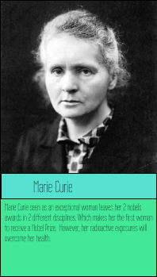
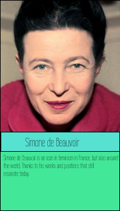
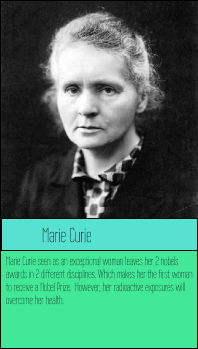
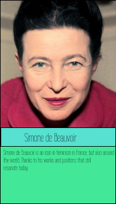

Angela Merkel, is a pillar of political feminism

Angela Merkel, is a pillar of political feminism Angela Merkel is in fact the German chancellor, but she did a lot of commitment which, today, position her as a feminism's pillar.
A status more than deserved ?
Angela Merkel is in the first place the first woman with 10 years spent as a German chancellor, which already confers her an important place in German society or into feminism. Moreover, she also proceeded to scientific studies before her current position, the fusion between her intellectual skills and her political power represents her as a "leader" among the European Union During Summer 2015, while desperate Syrian refugees flocked in Europe, Angela Merkel took a fast and unusual decision : to let approximately 1 Million of refugees in Germany, a bold act who lifted hearts, bewildered The Islamic State and made of Merkel the personality of the year. But it also sets off an antiimmigrates reaction.
Angela Merkel, a model for all ?
As quoted apprentice Kristin Auf der Masch "there are many women at my level, and there is Angela Merkel. There are not many women in between", from her care that we have seen at work with her actions explained previously but also she is the only woman who refers positive effects to power in the life of the population, whether at work or in public representation. As this apprentice said, through these actions, of her personality, Angela Merkel represents a model for all, for the world population.
Her trio of women
We can see, in her chancellor status, that Angela Merkel like to work with women. Close collaborators, advisers Eva Christiansen and Beate Baumann were a remarkable team according to Angela Merkel. After 12 years of power, the entire world knows Angela Merkel and her 2 relatives for their political trio. They met each other when the young minister was in the hospital with a broken leg, tired of politic, with an urgent need of a qualified assistant. Since this accident and those encounters, this trio was never disbanded and form a colossal power for Germany.
From her status as chancellor, Angela Merkel holds the place of a throne among feminism through these actions, these decisions.
Glosary
Chancellor : The title of Chancellor is synonymous with Minister of Justice, Keeper of the Seals
Sources
time.com
information.tv5monde.com
Autres Représentantes du féminisme
 


